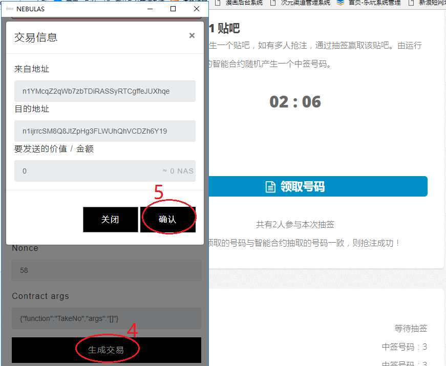

如果您使用过以太坊的钱包插件METAMAST，那么您可以不用看本教程了
注意！一次完整的数据提交操作需完成3步：解锁钱包->生成交易->确认
安装钱包插件
由于在页面中直接导入钱包文件或输入私钥是极不安全的，使用前请先 下载Nebulas官方钱包插件>>
目前只支持PC端chrome浏览器使用！手机客户端希望有技术爱好者可开发一个。
下载方法如下图：打开上面的官方钱包插件链接-->在页面中部右边的地方找到一个绿色的按钮：Clone or download -->点击下拉选择：Download ZIP 将文件下载到本地后解压。
钱包安装方法如下图：1.在chrome浏览器地址拦输入：chrome://extensions/ 2.选择开发者模式（有的版本是在“开发者模式”前面打勾）。 3.点击“加载已解压的扩展程序...”按钮。 4.选择刚才下载并解压的钱包插件目录，安装成功后就可以在右上角看到一个星星的图标了。
创建钱包
打开Chrome点右上角的星星图标打开钱包插件——>点钱包左上角“新建钱包”——>输入密码——>点“新建钱包”按钮——>下载密码库文件(钱包密码库文件一定要保管好，每次解锁钱包都要用到它)
下载好密码库文件，切换到“发送星云币”点“选择钱包文件”选取刚才下载的文件，输入密码，点“解锁”就可以看到自己的钱包地址和余额了。
抢注贴吧
每约6分钟产生一个贴吧，如有多人抢注，通过抽签赢取该贴吧。由运行在星云链上的智能合约随机产生一个中签号码。
打开首页index.html 点“领取号码”，注意，领取号码时需要向合约地址发起一笔 0 NAS的交易。
领到号码后等待抽签即可，如果您的号码被抽中，就可以在“我的贴吧”里找到该贴吧。它完全属于你的，可以自由支配。因为所有权已写入区块链，不可篡改！
贴吧管理
每个贴吧的名称是唯一的，不可重复。抢到贴吧后记得马上创建贴吧，以免好名字被人抢先了！
每个贴吧都是区块链上唯一的存在。有无限升值空间，还可以在市场上出售。
出现“insufficient gas”错误的解决方法
这个意思是矿工费超过上限了！因为每当同时调用合约的人数太多时，矿工费就会上涨。区块链上的数据是需要给矿工一些费用帮忙打包的。谁出的矿工费多就谁先打包。这跟以太坊的机制是一样的。
解决方法就是再次执行时提高矿工费如下图,将gas限制由200000改为300000，如果还出现同样错误 ，就再加一点，逐步提高。直到执行成功。注意：这是一个完全自愿的市场行为，价高者得，如果您觉得矿工费太高了，导致投签的成本太高，请放弃本次抽签！200000个gas应该相当于0.0000002 NAS吧，太多零有点晕，大家可以自己试下:)